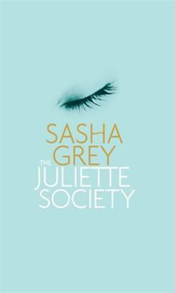
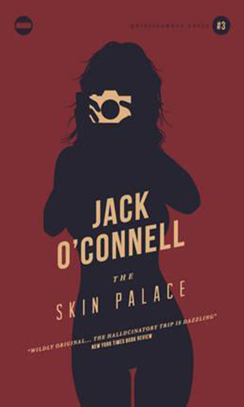
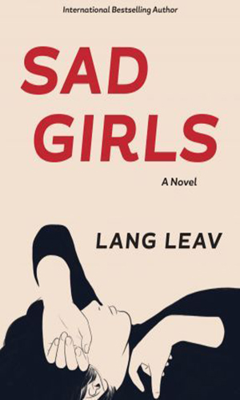

Books I'd very much like to read:
The Juliette Society
Sasha Grey
Catherine, a blossoming film student whose sexuality has been recently stirred, finds herself drawn into a secret club where the world's most powerful people meet to explore their deepest, often darkest sexual fantasies. But even as these new experiences open intense new pleasures for Catherine, they also threaten to destroy everything she holds dear.In her debut novel, Sasha Grey takes us inside a private, high-profile, sex society where anything and everything can happen.
The Glasgow Coma Scale
Neil D. A. Stewart
When Lynne offers money to a homeless man on Glasgow's Sauchiehall Street she is shocked to recognise Angus, her former art tutor from college. Lynne once revered him, even dreamed of becoming an artist under his tutelage. Now, she works as a supervisor at an insurance call-centre. And as for Angus, he has fallen on even harder times ...She insists on inviting him to stay at her flat, but just as Angus doesn't go out of his way to explain the reasons for his misfortune, neither is Lynne's insistence on taking him in to her home purely altruistic. The Glasgow Coma Scale is a barbed love letter to the city, a dysfunctional romance, and a story about damage: the kind done unthinkingly, the kind done deliberately, and the worst sort - the harm we do even as we're trying to do 'the right thing'. 'Neil Stewart is the kind of writer who appears once in a generation, gifts fully formed. Through the unforgettable duo of Angus and Lynne, he takes us to places where other novels fear to treat, from the perils of life on a park bench through the murky grey areas of love to the ineffable mysteries of art. Compassionate, brave, singing with life, The Glasgow Coma Scale is an outstanding debut from an extraordinary talent.' Paul Murray, author of Skippy Dies.
The Skin Palace
Jack O'Connell
Jack O'Connell's The Skin Palace is a harrowing and ecstatic descent into a breathtaking netherworld aswirl with the real, the imagined and the absolutely unforgettable. Amid the post-industrial decay of Quinsigamond glitters a fabulous jewel - Herzog's Erotic Palace - America's most lavish porn theatre and a gangland laundry for semi-sour cash. But most of all, Herzog's is the place where dreamers meet and seductive nightmares find their dazzling realisation.
The Grownup
Gillian Flynn
A young woman is making a living faking it as a cut-price psychic (with some illegal soft-core sex work on the side). She makes a decent wage mostly by telling people what they want to hear. But then she meets Susan Burke. Susan moved to the city one year ago with her husband and 15-year-old stepson Miles. They live in a Victorian house called Carterhook Manor. Susan has become convinced that some malevolent spirit is inhabiting their home. The young woman doesn't believe in exorcism or the supernatural. However when she enters the house for the first time, she begins to feel it too, as if the very house is watching her, waiting, biding its time. The Grownup, which originally appeared as 'What Do You Do?' in George R. R. Martin's Rogues anthology, proves once again that Gillian Flynn is one of the world's most original and skilled voices in fiction.
I Know Why the Caged Bird Sings
Maya Angelou
Sent by their mother to live with their devout, self-sufficient grandmother in a small Southern town, Maya and her brother, Bailey, endure the ache of abandonment and the prejudice of the local 'powhitetrash.' At eight years old and back at her mother's side in St. Louis, Maya is attacked by a man many times her age-and has to live with the consequences for a lifetime. Years later, in San Francisco, Maya learns about love for herself and the kindness of others, her own strong spirit, and the ideas of great authors (`I met and fell in love with William Shakespeare`) will allow her to be free instead of imprisoned. Poetic and powerful, I Know Why the Caged Bird Sings is a modern American classic that will touch hearts and change minds for as long as people read.
The Name of the Wind
Patrick Rothfuss
'I have stolen princesses back from sleeping barrow kings. I burned down the town of Trebon. I have spent the night with Felurian and left with both my sanity and my life. I was expelled from the University at a younger age than most people are allowed in. I tread paths by moonlight that others fear to speak of during day. I have talked to Gods, loved women, and written songs that make the minstrels weep. My name is Kvothe.You may have heard of me'So begins the tale of Kvothe - currently known as Kote, the unassuming innkeepter - from his childhood in a troupe of traveling players, through his years spent as a near-feral orphan in a crime-riddled city, to his daringly brazen yet successful bid to enter a difficult and dangerous school of magic. In these pages you will come to know Kvothe the notorious magician, the accomplished thief, the masterful musician, the dragon-slayer, the legend-hunter, the lover, the thief and the infamous assassin.The Name of the Wind is fantasy at its very best, and an astounding must-read title.
The Curious Incident of the Dog in the Night-time
Mark Haddon
The Curious Incident of the Dog in the Night-Time is a murder mystery novel like no other. The detective, and narrator, is Christopher Boone. Christopher is fifteen and has Asperger's, a form of autism. He knows a very great deal about maths and very little about human beings. He loves lists, patterns and the truth. He hates the colours yellow and brown and being touched. He has never gone further than the end of the road on his own, but when he finds a neighbour's dog murdered he sets out on a terrifying journey which will turn his whole world upside down.
American Girls
Alison Umminger
A bittersweet, honest, and widely acclaimed YA coming-of-age novel that distills honest truths about American girldom Anna is a fifteen-year-old girl slouching toward adulthood, and she's had it with her life at home. So Anna "borrows" her stepmom's credit card and runs away to Los Angeles, where her half-sister takes her in. But LA isn't quite the glamorous escape Anna had imagined. As Anna spends her days on TV and movie sets, she engrosses herself in a project researching the murderous Manson girls--and although the violence in her own life isn't the kind that leaves physical scars, she begins to notice the parallels between herself and the lost girls of LA, and of America, past and present. In Anna's singular voice, we glimpse not only a picture of life on the B-list in LA, but also a clear-eyed reflection on being young, vulnerable, lost, and female in America--in short, on the B-list of life. Alison Umminger writes about girls, violence, and which people society deems worthy of caring about, which ones it doesn't, in a way not often seen in teen fiction.
My Lesbian Experience With Loneliness
Kabi Nagata
My Lesbian Experience with Loneliness is an honest and heartfelt look at one young woman's exploration of her sexuality, mental well-being, and growing up in our modern age. Told using expressive artwork that invokes both laughter and tears, this moving and highly entertaining single volume depicts not only the artist's burgeoning sexuality, but many other personal aspects of her life that will resonate with readers.
Sad Girls
Lang Leav
School is almost out for Audrey, but the panic attacks are just beginning. Because Audrey told a lie and now her classmate Ana, has wound up dead. Just as her world begins to spin out of control, Audrey meets the enigmatic Rad - the boy who could turn it all around. But will their ill-timed romance drive her closer to the edge?
Red Rosa
Kate Evans

Rosa tells the life story of philosopher, economist, publisher, writer, organizer, political leader, and martyr Rosa Luxemburg, in full-color, graphic form. The story follows Rosa from her family life in Jewish Poland, where she became the leader of a general strike at age fifteen and was exiled from her homeland at eighteen, to her immersion into the then largest radical party in the world, the German Social Democratic Party, to her founding of the German Communist Party and leadership of the German revolution of 1919. This beautifully drawn graphic life gives "Red Rosa" her due as an iconic radical, but also portrays a fascinating woman with a rich love life, struggles with physical disability, and an abiding love of literature and theater. Rosa will contribute to the growing understanding of one of the 20th century's greatest revolutionaries.
Neurocomic
Dr. Matteo Farinella & Dr. Hana Ros
Do you know what your brain is made of? How does memory function? What is a neuron and how does it work? For that matter what's a comic? And in the words of Lewis Carroll's famous caterpillar: 'Who are "you"?' "Neurocomic" is a journey through the human brain: a place of neuron forests, memory caves, and castles of deception. Along the way, you'll encounter Boschean beasts, giant squid, guitar-playing sea slugs, and the great pioneers of neuroscience. Hana Ros and Matteo Farinella provide an insight into the most complex thing in the universe.Produced in association with the Wellcome Trust, one of the world's largest medical charities. A superb introduction to the complexities of the brain for the layman. High production values, FSC paper stock, and foil embossed cover. Hana Ros, PhD, is a neuroscientist from Oxford University, England. Matteo Farinella, PhD, is an illustrator specializing in graphic journalism and scientific illustration. Farinella received a PhD in neuroscience from University College London in 2013.